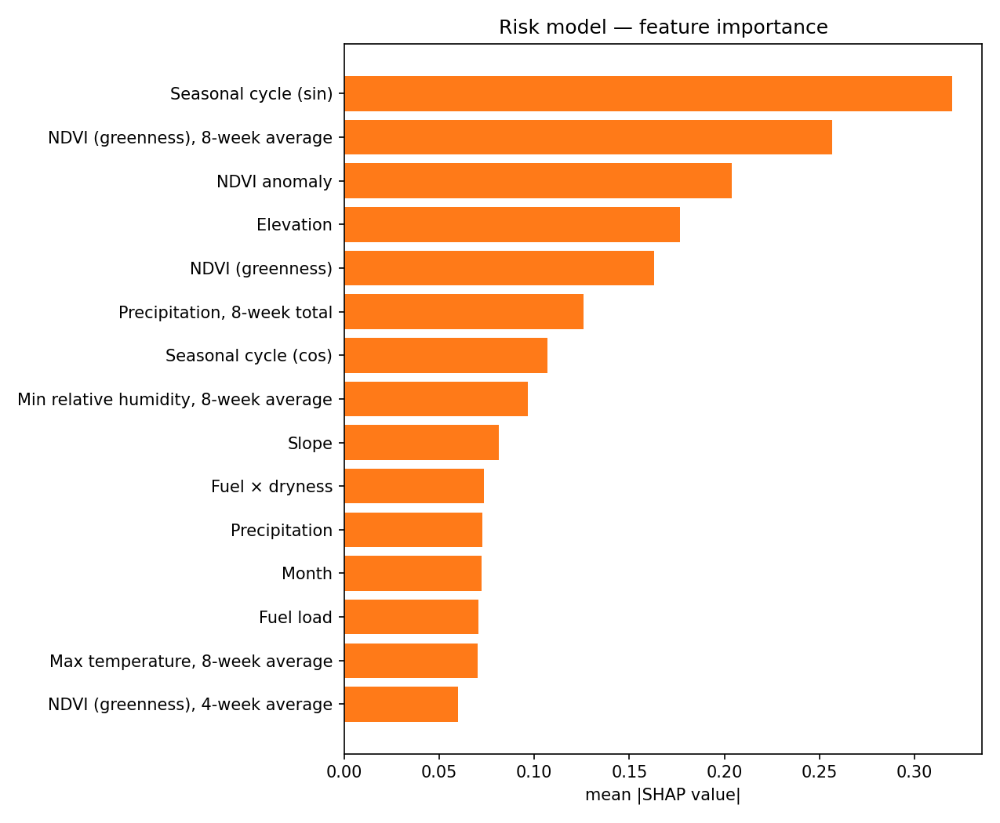

An end-to-end wildfire model for Oregon
A reproducible pipeline trained on — real cell-weeks of MODIS fire labels, GRIDMET weather, terrain, fuel and NDVI from 2001 to 2024, with NIFC ignition cause layered in. It produces three things: a per-cell risk surface, per-region fire-count forecasts, and a satellite burn-scar detector. Every score on this site comes from cross-validation built so the model can't peek at the answer.
The headline finding
Calling whether a 36 km² cell will burn in a given week, using environment alone, is hard. Absolute scores stay low no matter which method you throw at it. What actually separates the methods is spatial generalization. Under leave-one-region-out cross-validation the gradient-boosted model beats a climatology baseline by roughly 4×, and climatology drops to no-skill (ROC-AUC 0.50). The model carries over to regions it never saw in training. "Where fires usually happen" does not.
Two results looked great and got thrown out: a fire-persistence shortcut that pushed PR-AUC to 0.65, and a synthetic detector that scored a perfect 1.00 because the task was trivially separable. The numbers we report are lower, and they hold up.
What drives risk
Top features by mean |SHAP|. These line up with fire physics rather than data artifacts.
Oregon fire activity by year (real MODIS)
Burned cell-weeks per fire season. 2024 ran hot and 2019 was quiet, which matches Oregon's actual record.
Live Fire Watch · satellite active-fire detection
Recent FIRMS thermal detections (MODIS / VIIRS, refreshed a few times a day) over Oregon, snapped to the hex grid. For the hottest cells we pull a fresh Sentinel-2 patch and run the burn-scar CNN to confirm whether the imagery actually looks burned — the thermal flag says "hot," the image model says "burned."
Detections
Weekly forecast: 2025 fire season
The trained risk model run forward over every Oregon cell, one week at a time. For each week of the year it takes the per-cell climatology of every input (weather, NDVI, drought, fuel) and feeds that through the gradient-boosted model. Read it as "expected risk under typical conditions for this week," not a weather forecast: real seasonal weather isn't part of the pipeline. The Predictions Tracker compares it against actuals as 2025 data lands.
Predicted for this week
Top 8 districts by expected fires
Expected weekly statewide fire activity (2025)
Sum of per-cell predicted risk; tracks the seasonal climatological arc.
Fire Danger Check · model caution vs. conditions
Each ODF fire-protection district gets two weekly fire-danger ratings on the same none → extreme scale: one from the model's predicted activity, and one from where that week's ERC (Energy Release Component, the standard fire-danger index Oregon agencies use) falls in the district's own 2001–2024 climatology. This page asks whether the model's caution lines up with the conditions-based caution.
This week by district
Climatological "this week." Each district's model rating next to its ERC-conditions rating, with the gap between them.
Season agreement grid
Rows are districts, columns are forecast weeks. Green = the model's class matches the conditions class, amber = off by one step, red = further apart. Hover a square for both ratings.
Where they disagree
Conditions class (rows) vs. model class (columns), counted over every district-week. The diagonal is agreement; off-diagonal shows the model running hotter or cooler than conditions.
Predictions Tracker: locked predictions vs. reality
Everything on this page was locked at build time (see the
timestamp) and can't be edited after the fact. Once the 2025 season is partway or fully done,
uv run python scripts/verify_predictions.py pulls the real MODIS observations
from Earth Engine and the comparison columns below fill in. This is the test that matters:
out-of-time, out-of-sample, checked against ground truth.
Statewide forecast
Per-district forecast
Predicted risk across Oregon (locked)
Mean predicted risk for the 2025 season on the native H3 hex grid. The 40 highest-risk cells are outlined in white; after verification, any that burned turn green. Click any hexagon for its prediction.
Top 40 highest-risk cells (locked)
Mean predicted risk across the 2025 fire season. "Hit" means the cell actually burned in 2025 (at least one cell-week with MODIS-detected fire). These fill in after verification.
Weekly state forecast vs actual
Models & Results
Every metric here comes from cross-validation that respects space and time, on real data. PR-AUC is the headline for this rare-event problem; lift = PR-AUC ÷ base rate; recall@20% is the share of fires caught when you flag the top 20% riskiest cells; Brier measures calibration (lower is better).
Risk model vs. baselines: forward-chaining (time) CV
Risk model vs. baselines: spatial-block CV
How to read these numbers
We leave out fire_lag1 on purpose (did this cell burn last
week?). On real data fires carry over week to week, so that one feature takes over and
pushes PR-AUC to about 0.65. But that's measuring fire continuation, not risk. The
table above is the environmental skill on its own. The absolute values are
modest, because weekly cell-level fire is both rare and hard to call. What counts is
that the GBM beats both baselines under both CV schemes, and roughly 4×
climatology spatially. That part generalizes.
Feature importance (SHAP)

Fire-detection CNN on real Sentinel-2
A first attempt paired active-fire labels with a season median and scored near chance (ROC-AUC ~0.59): the median averages the brief fire signal away. Reframing it as burn-scar detection (burned-area labels plus a post-peak composite) lifted it to the figures shown, on held-out spatial blocks.
Fire-count forecast by ODF fire-protection district
Negative-binomial model, latest season, with 95% prediction intervals. Click a district on the map or a table row for detail.
Data Explorer
Ecoregion summary
Click a row to filter the Risk Map to that ecoregion.
Data sources
Pipeline at a glance
- Ingest: Earth Engine (MODIS burned area + thermal, GRIDMET, SRTM, WorldCover, NDVI, GRIDMET drought) plus NIFC ignition cause, on an H3 grid.
- Features: antecedent weather windows, dryness memory, interactions, NDVI anomaly, ignition-cause priors.
- Models: LightGBM risk surface, negative-binomial counts, EfficientNet burn-scar CNN.
- Evaluation: spatial-block, leave-region-out and forward-chaining CV; PR-AUC, Brier, recall@threshold; SHAP.